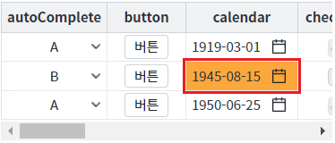
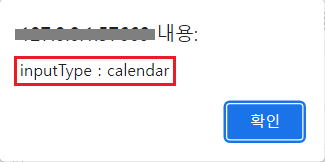

GridView의 바디 컬럼의 속성 'inputType'에 설정한 값을 반환 받을 수 있는 함수 'getColumnType'의 예제입니다.
GridView 컬럼의 속성 'inputType' 설정 값 반환받기
GridView의 셀을 선택(클릭)하고, 버튼 선택된 셀의 'inputType' 반환받기를 클릭하면 브라우저 'alert'으로 셀의 inputType을 확인할 수 있습니다.
STEP 1. 초기 상태를 확인합니다.
GridView의 컬럼 'calendar'의 2번째 행이 선택된 상태입니다.
그림 1.브라우저(Chrome) 실행 예시

STEP 2. 선택된 셀의 'inputType'을 확인합니다.
버튼 선택된 셀의 'inputType' 반환받기를 클릭합니다.STEP 3. 실행된 결과를 확인합니다.
'inputType'이 브라우저 alert으로 출력됩니다. 출력 값 : 'inputType : calendar'
그림 2.브라우저(Chrome) 실행 예시

GridView의 함수 'getColumnType'를 이용하여 스크립트를 작성합니다. 세부 지정은 아래의 스크립트 예시에 작성되어 있습니다.
스크립트
//예제 파일에서는 스크립트 scwin.btn_exam1_onclick에 작성되어 있습니다. // GridView 'grd_exam'의 선택된 컬럼의 Index를 반환 받습니다. let numColIndex = grd_exam.getFocusedColumnIndex(); // 선택된 셀이 없는 경우 안내 로직. if (numColIndex !== 0 && !numColIndex) { alert("GridView에 셀을 선택(클릭)하세요."); return; } // GridView 'grd_exam'의 바디 컬럼 속성 'inputType'의 설정 값을 반환받습니다. let strInputType = grd_exam.getColumnType(numColIndex);
getColumnType( colIndex )
getFocusedColumnIndex( )
[웹스퀘어5 SP5 개발 가이드] GridView
링크 : https://docs1.inswave.com/sp5_user_guide/86bdcf48029b958b